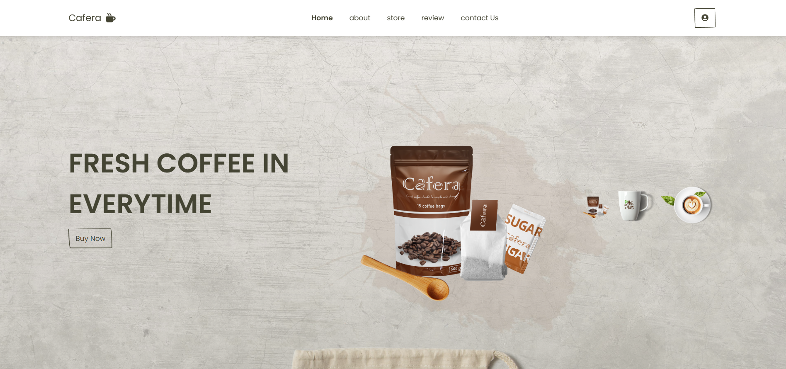
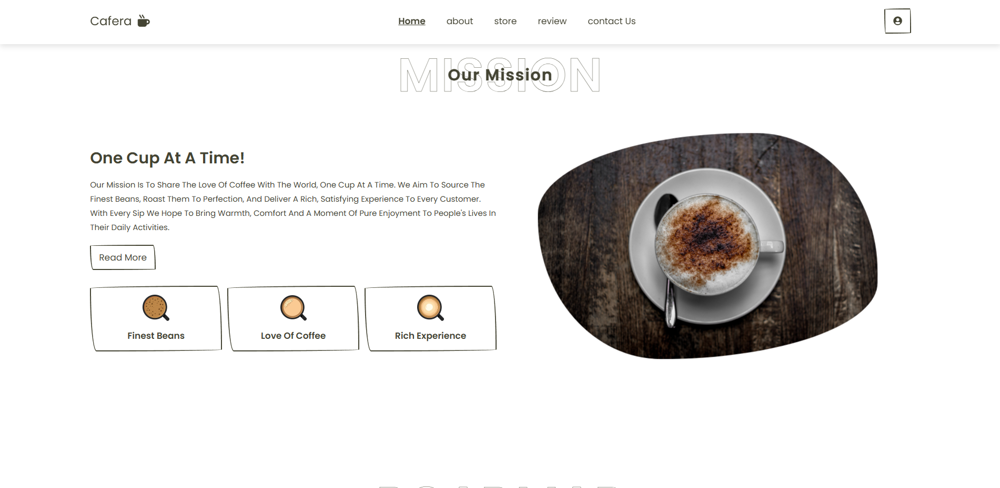
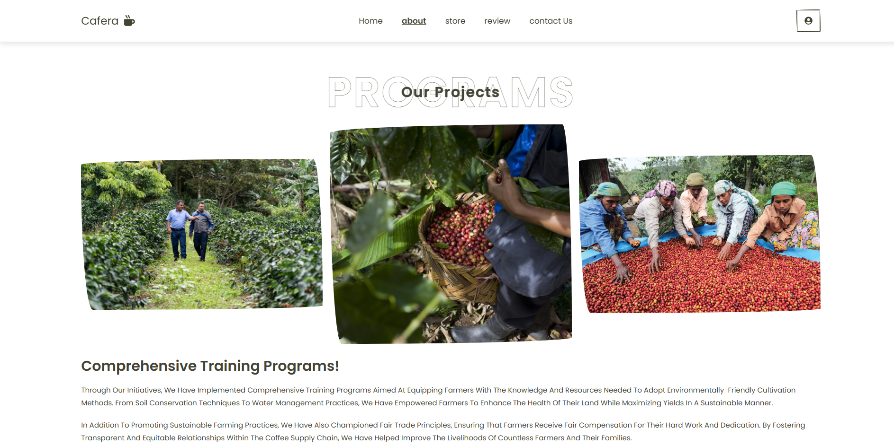
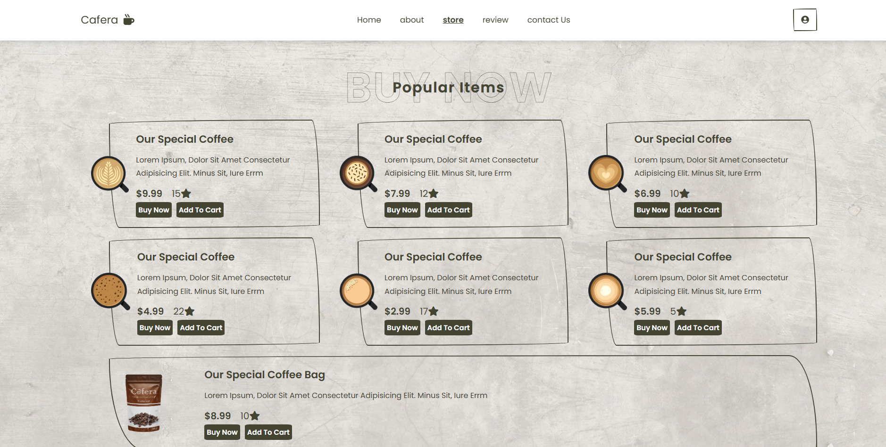
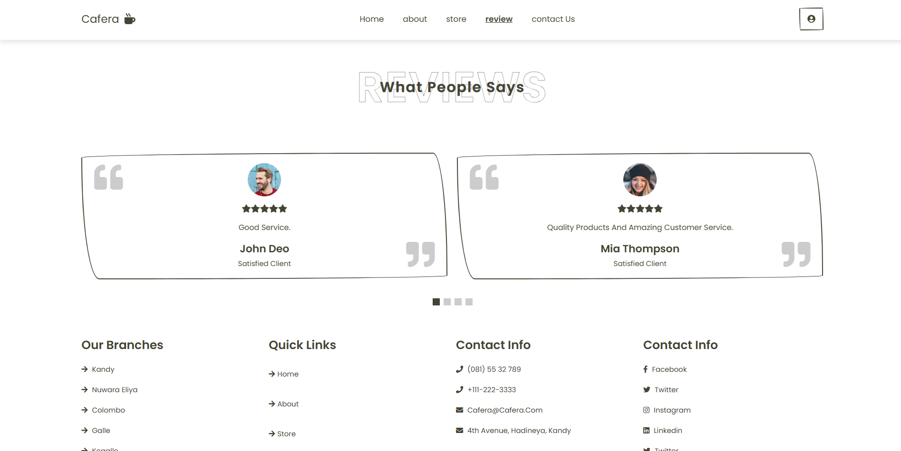

19 February 2025
Cafera is a coffee shop website created using react. This project is a demo application showcasing the implementation of various web development techniques and technologies. It aims to serve as a reference for building modern, responsive web applications.
For questions or suggestions, feel free to contact me at karunasinghesampath38@gmail.com.




